OpenOffice.org 教程之 Writer 文字处理
作者：TeliuTe 来源：基础教程网
一、字体格式 返回目录 下一课文字格式主要包括字体、字号、颜色等等，使用格式后文章看起来很整齐，也有利于阅读，下面我们来看一个练习；
1、选择字体
1）启动 Writer，输入两行文字，“文字格式↙1、字体：宋体、黑体、楷体↙”（↙表示每行输完后按一下回车键）；
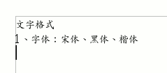
2）默认是一种常见的楷体，在 Windows 里默认的是宋体；
3）选中文字“黑体”，方法是把鼠标移到“黑”的左边，按住左键不松，拖到“体”的后边，
这时候“黑体”两个字就被选中，颜色变成黑色(反白显示)；
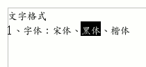
4）在工具栏的中间找到字体字号那儿，点一下旁边的下拉按钮，出来下拉列表，在里面找到“文泉驿正黑”，点击选中，
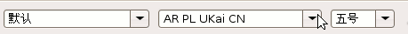
这时工作区里头选中的文字，它的字体就改成黑体了；
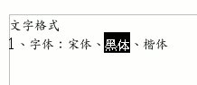
5）同样再选中拖黑“宋体”这两个字，在工具栏中点下拉按钮，找一个宋体，可以用 FreeSerif；
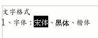
这样字体修饰就做好了，接下来我们来学习字号的修改；
2、 复制文字
1)拖黑选中第二行文字，从“字”拖到最后的“1”，这次从后往前选；
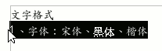
2）把鼠标移到黑色里面，然后点右键，注意瞄准以后再点右键，弹出一个菜单，在“复制”上点一下鼠标左键选择复制命令；
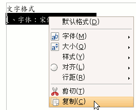
3）再把鼠标移到下面第三行，在最前面空白点一下鼠标右键，注意瞄准了再点鼠标右键，
4）在弹出的菜单里面，找到“粘贴”命令，单击鼠标左键选择粘贴，这样就把上一行文字复制到这儿了；
5）把第三行的“1”改成 2，把“字体”改成“字号”，
在“宋体”后面点一下左键，加上“一号”、“黑体”后面加上“二号”、“楷体”后面加上“三号”；
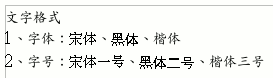
3、 设置字号
1）拖黑选中“宋体一号”，在工具栏中字体旁边有个“五号”，在它旁边的按钮上点一下；
在弹出的下拉列表中，选择“一号”，看一下效果；
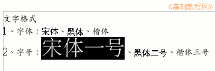
2）再拖黑选中“黑体二号”，在工具栏的字号按钮上点一下，选择“二号”，看一下效果；
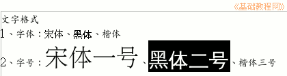
3）同样把“楷体三号”设成“三号”大小，看一下效果；
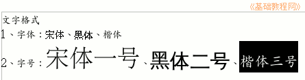
以“文字格式”为文件名，保存文件到自己的文件夹；
你还可以试试阿拉伯数字的字号，从而可以得出字号大小的规律；
本节学习了设置文字格式的基本操作，如果你成功地完成了练习，请继续学习下一课内容；本教程由86团学校TeliuTe制作|著作权所有
基础教程网：http://teliute.org
美丽的校园……
转载和引用本站内容，请保留版权信息和本站链接。